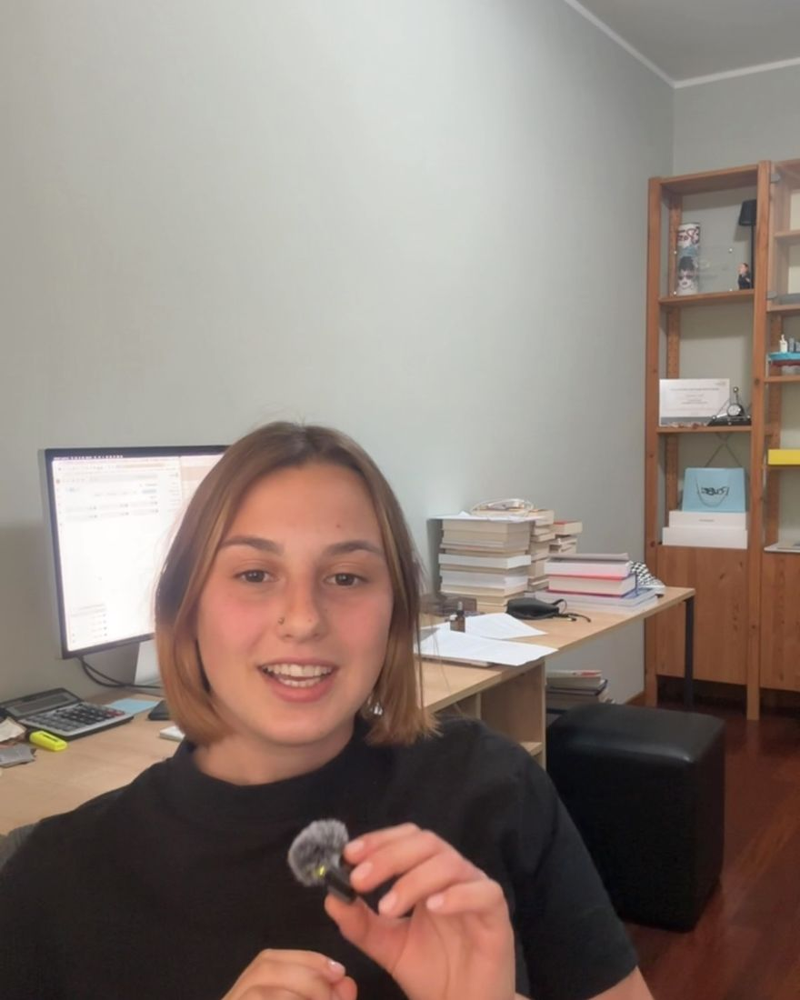

💕
Perché gratis
Sto imparando. E voglio farlo bene.
- Ho fatto il corso base con Veronica Nails Como
- Ora mi servono 5 persone per fare pratica
- Ci metto tutto il tempo e la cura che servono

💅
Cosa facciamo
Semipermanente rinforzato, curato nei dettagli.
- Prima guardiamo insieme le tue unghie
- Scegliamo forma e colore che ti piacciono
- Alla fine mi dici sinceramente com'è andata
 PrimaDopo
PrimaDopo
‹›
📍
La zona
Da Lierna a Lecco, fino a Calolziocorte.
- Ramo di Lecco: da Lierna e Mandello del Lario
- Lecco e dintorni
- Fino a Calolziocorte
✨
Come funziona
Tre passi, e il posto è tuo.
- Compili il modulo: due minuti
- Ti scrivo io per fissare giorno e ora
- Ci vediamo per la tua seduta